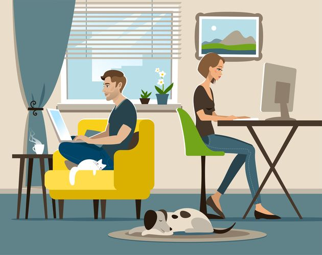

Quel est l'impact du travail à domicile sur les collaborateurs et leur travail ? Une enquête réalisée par une entreprise californienne auprès de ses employés nous apporte quelques éléments de réponse.
La pandémie de Covid-19 a obligé de nombreux employés à passer au travail à distance et ainsi à devenir fortement dépendants de la technologie pour gagner leur vie. Mais les difficultés techniques rencontrées dans ce cadre, en addition à l'adaptation nécessaire, ont eu des répercussions sur le personnel et les managers de différentes manières.
L'équipe de Fluxon, spécialisée dans la conception d'apps et basée à San Francisco, a décidé d'interroger 1 005 employés étant passé au travail à distance, au plus fort de la pandémie. L'objectif était d'analyser les changements de comportement au travail depuis le passage au télétravail.
L'enquête montre que le travail à domicile présente des avantages importants pour certains. De manière générale, les collaborateurs en sont satisfaits. D'après les résultats, près d'un salarié sur quatre (23,3 %) était plus discipliné, et près d'un salarié sur trois (29,6 %) se sentait plus créatif depuis le début du télétravail.
Cependant, près de trois personnes sur quatre (72,4 %) ont eu des difficultés à passer au travail à distance. Et la technologie joue un rôle important dans ces difficultés.
Plus de la moitié (50,6 %) ont été confrontés à des problèmes techniques. Près de deux sur cinq (39,6 %) et plus d'un sur trois (34,4 %) ont rencontré des problèmes lors des réunions virtuelles.
Un salarié sur trois s'est senti moins discipliné et moins efficace, luttant contre le manque d'interaction sociale (32,5 %) et l'ennui (31 %).
Près d'un travailleur à distance sur sept (14 %) a éprouvé des difficultés à s'éloigner de son travail, tandis que 12 % ont admis avoir des problèmes avec des collègues les contactant en dehors des heures de travail.
Bien qu'une majorité d'employés souhaite continuer à travailler à distance une fois la pandémie passée, il faudra un certain temps pour modifier les processus de travail et mettre en place des outils afin que le télétravail et la technologie qui le permet fonctionnent correctement.
Il est nécessaire de disposer d'outils de collaboration efficaces pour rationaliser le travail et de tenir compte des différences dans le processus créatif pour que les gens aient le temps – sans intrusion – de fournir leur meilleur travail. L'utilisation de chats est très pratique pour certains collaborateurs, mais très intrusive pour d'autres. Avoir une approche sensible, et mettre en place des changements pour s'adapter avec souplesse à tous les modes de travail pourrait prendre du temps.
Mais, une fois cette étape passée, il se pourrait que les entreprises réalisent qu'elles peuvent très bien réussir, quel que soit l'endroit où se trouvent leurs collaborateurs.